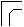

ON connaît déjà, par les expériences faites sur les claviers et sur les soupapes des gosiers, s'il existe un défaut de changement de compression d'air. Dans ce dernier cas, si la diminution de pression tout près des soupapes des gosiers a été remarquée, mais d'une manière peu sensible, on ne doit attribuer le défaut qu'au porte-vent. On jugera d'abord le degré de changement de pression d'air, en appliquant le pèse-vent sur la caisse du sommier, c'est-à-dire sur le côté opposé à l'entrée du vent qui doit l'alimenter ; ensuite on touchera sur le clavier le même accord, et de la même manière que l'on a expliquée pour la vérification des soupapes des gosiers. Après avoir bien remarqué le changement de pression d'air par la colonne d'eau du pèse-vent, on peut en apprécier les degrés de pression par le simple calcul suivant : par exemple, si la diminution de la pression d'air près des gosiers est de 1 degré, et celle que l'on a reconnue sur la caisse du sommier, de 3 degrés, alors la différence entre ces deux chiffres indique la somme précise de l'irrégularité du vent, qui est de 2 degrés, puisque de 1 degré à 3, la différence est de 2.
1o Ce défaut peut provenir de la mauvaise combinaison des dimensions des porte-vent.
2o De l'interception du vent par un trop grand nombre d'angles qui brisent le courant d'air, au lieu de lui laisser le parcours de la ligne la plus courte et la plus libre ; parce que ces angles sont très-souvent dans leur forme droite et aiguë, comme par exemple : , au lieu d'être en double volume, pour laisser son passage libre, comme dans cette forme : . Dans les cas où l'on reconnaît dans le porte-vent une diminution de pression qui dépasse un degré au pèse-vent, il faut que le facteur d'Orgues y remédie entièrement.